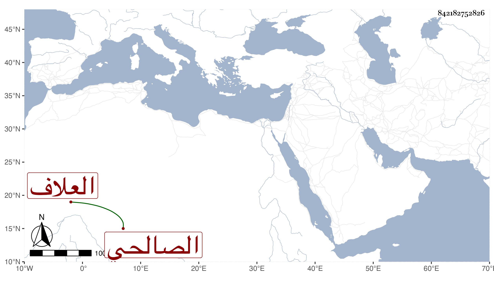

0902Sakhawi.DawLamic.ITO20230111-ara1.EIS1600.842182752826
Biography ID: 842182752826
346
محمد بن عثمان بن علي الصالحي العلاف ويعرف بابن الضرير . سمع في سنة أربع وتسعين وسبعمائة على عبد الرحمن بن محمد بن الرشيد والعماد أبي بكر بن أحمد ابن عبد الهادي وفي التي تليها على أحمد بن محمد بن راشد بن خطليشا وعبد الله ابن خليل الحرستاني وأحمد بن إبراهيم بن يوسف وحدث سمع منه الفضلاء كابن فهد وغيره ، وكان يتكسب بحانوت قريب الشركسية من الصالحية مات قبل الخمسين ظنا .
